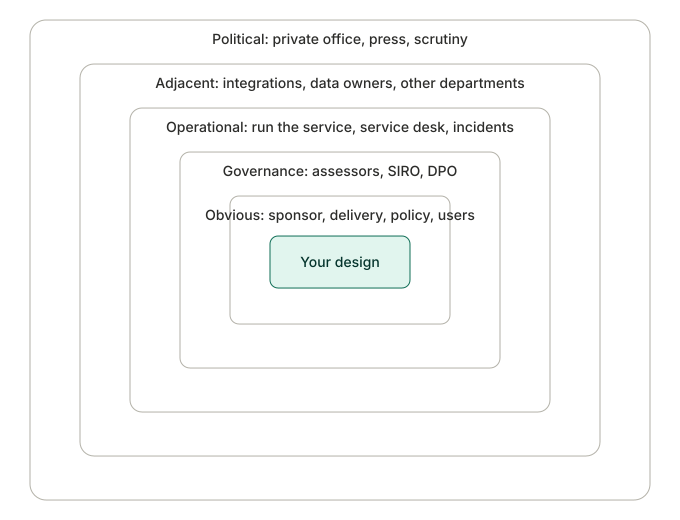
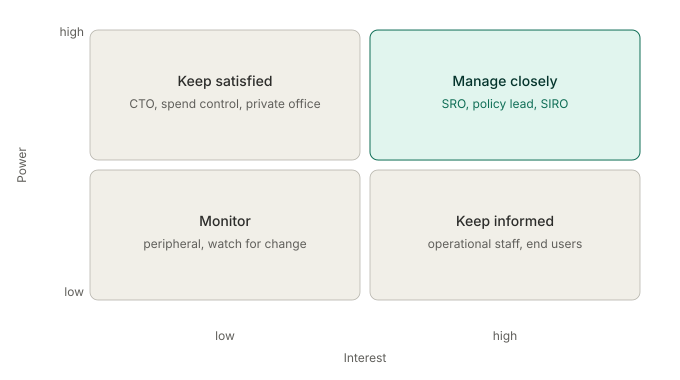
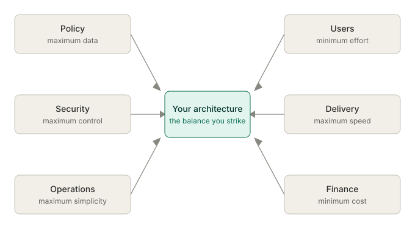

Users, stakeholders and the people around your design
No architecture exists in a vacuum. Every solution sits among people: users who depend on it, stakeholders who fund it, teams who build and run it, leaders held accountable for it. Design without understanding them and you'll produce something technically elegant and organisationally undeliverable. In government the cast is unusually large, and reading it well is part of the job, not someone else's.
You'll come away with:
- Why stakeholder understanding is an architecture skill, not the delivery manager's problem.
- How to map the people around a government design, from the obvious to the political.
- A way to decide who gets your attention, using power and interest.
- How to hold the line on user needs, and make competing demands explicit instead of pretending they aren't there.
Stakeholder understanding is an architecture skill
Plenty of architects treat stakeholder management as someone else's job, the delivery manager's or the business analyst's. That habit produces architecture failures. The pattern is always the same. You design to the requirements as written, but those requirements came from one group and miss what the others needed. The security team finds the design doesn't meet their standards three months into build. Operations realise they can't support it after it's built. The minister's private office discovers at launch that the service can't produce the report the minister wants. Every one of those is an architecture failure, not a project management one.
The reason is plain. Architecture decisions affect people, and people affect architecture decisions. The security team's requirements shape your technology choices. Operations' capabilities constrain your deployment model. The policy team's future plans drive how extensible you make things. The minister's priorities set your timeline and scope. Miss those influences and you're designing blind. The DDaT framework names stakeholder understanding as a capability for solution architects, and at senior levels it expects more than managing people. It expects you to influence them, helping them see what their requirements imply and steering them toward decisions that serve the whole system rather than one corner of it.
Architecture decisions affect people, and people affect architecture decisions. Miss that and you're designing blind.
Mapping the people around your design
Mapping is where the work starts, and in government the map has more layers than most private sector work does. It helps to picture them as rings around your design, widening from the people everyone names to the ones nobody thinks of until it's too late.

The mistake is seldom missing the obvious people. It's stopping at them. The failures that surface deep into delivery all live further out: the governance bodies who can block you, the operations teams who inherit what you build, the adjacent teams whose systems and data you depend on, the political actors who can turn a quiet decision into a headline. For each person worth tracking, capture a few things:
- Name and role, specifically. Not "the security team" but who in it.
- What they care about in relation to your architecture.
- How much power they have to shape or block a decision.
- Whether they're supportive, neutral or resistant today.
- How, and how often, you'll engage them.
- What actually worries them about the work.
And keep it live. Stakeholder maps go stale fast, because people move, priorities shift, and new actors appear as the work progresses. Revisit it monthly at least, and whenever the project or the organisation changes shape.
Power and interest
Once you have the list, you have to decide where your attention goes, and the power and interest grid is the quickest way to do it. Plot each person by how much they can influence or block the work, and how much they actually care about the outcome.

High power and high interest is where your real engagement goes: the SRO, the policy lead, the SIRO on a service handling sensitive data. If any of them is surprised by something, you've failed. High power and low interest, often the departmental CTO, spend control or a private office, you keep satisfied with a light, regular brief so nothing reaches them cold. High interest but low power, the operational staff and the end users, you keep informed and genuinely listen to, because their insight is good even when their sign off isn't required. The rest you monitor. Two warnings. Power in government is fluid, and a low power stakeholder turns critical the moment a minister asks them a question or an FOI request lands. And don't confuse low organisational power with low knowledge. The caseworker who processes applications all day holds more useful detail than most people in the room, and dismissing them because they're junior is a classic and expensive mistake.
User needs and stakeholder wants
The Service Standard starts with user needs, which sounds obvious and creates one of the sharpest tensions you'll face. User needs are observable. They come out of research: watching someone try to finish a task, hearing where they get stuck. "I need to report my building's energy data without having to understand technical classifications" is a user need. Stakeholder wants are aspirational, born of organisational priorities and personal preference. "I want one platform that captures every possible data point, with real time analytics and machine learning predictions" is a want.
Both are legitimate inputs. They don't carry equal weight. User needs define what the service has to do to be any use; wants describe what the organisation would like on top. When they conflict, and they will, user needs should generally win. That's harder than it sounds, because the person with the want is often more senior and better connected than the users who just want to submit their data and move on. Holding the line takes evidence, nerve and tact. Your job is to make the tension visible and help resolve it well: show the research, show what happens when user needs lose, in poor take up, workarounds, complaints and failed assessments, and put numbers on it. "We can add those fifteen fields, but research says every extra field drops completion by three percent. Do we want that?" The best architects find a shape that serves both sides. The worst pick one side and lose the other.
User needs are what the service must do to be useful. Everything else is what the organisation would like on top.
What user research principles ask of your architecture
The GDS user research principles aren't abstract ideals. Each one lands as a concrete demand on your architecture.
- Start from user needs. If users think in "my application" while the department thinks in "cases", your architecture carries that translation, presenting a user view over the departmental model underneath.
- Design for the whole journey. Users live a service made of forms, phone calls, letters and waiting, so you integrate with contact centres, letter generation, appointments and cross channel status, not only the online form.
- Make it accessible and inclusive. WCAG 2.2 AA is a constraint that shapes how content is structured, how forms are built and how errors are handled, and it can decide real choices, such as when a single page app raises barriers a multi page approach would avoid.
- Iterate on evidence. That means designing for change: modular components, clear interfaces, feature flags, pipelines that make releases frequent and low risk. A six month release cycle can't iterate.
- Be open and honest. Your documentation should make sense to non technical stakeholders, and your trade offs should be on the table even when the truth is awkward.
Treat user research as someone else's problem and you'll keep producing architectures that frustrate users and fall over at assessment.
Managing competing demands
Competing demands are the normal state in government. Policy wants the most data, users want the least effort, security wants the most control, delivery wants the most speed, operations wants the most simplicity, finance wants the least cost. Your job is to find the architecture that balances them, and to make the trade offs explicit rather than quietly choosing for everyone.

A few moves make this manageable. Put the demands side by side in plain sight, because written down together the conflicts and the possible compromises both become obvious. Separate the genuine non negotiables, the legal duties, security classifications and accessibility standards, from the preferences dressed up as requirements. Quantify the trade off instead of waving at it. Saying "there's a tension between security and usability" helps no one; saying "two factor authentication raises security and drops completion by fifteen percent for users over sixty five, and here are three options that balance the two differently" gives people something to decide on. Offer the options and let the people with authority choose with the consequences in front of them. Write the decision down, who decided, why, and what was traded away, so that in a year nobody has to guess why the service works the way it does. And revisit it, because the balance moves: a low priority security worry becomes urgent the week after a breach somewhere else. The architect who tries to please everyone pleases no one. The one who makes the trade offs explicit earns trust.
The political reality you design inside
Government architecture sits in a political reality with no real private sector parallel, and ignoring it doesn't make it go away. It just means it blindsides you. A ministerial announcement turns a launch date into a commitment, which may mean designing a phased launch, core function by the political deadline and the rest later, rather than holding out for the technically ideal timeline. Budgets are annual and reviewed, so a multi year programme can lose its funding halfway through, which is the argument for each phase delivering something usable rather than laying foundations that only pay off at the end. Data sharing that makes perfect technical sense can be blocked by cross departmental politics. Public scrutiny, through FOI, the National Audit Office, the Public Accounts Committee and the press, means your decisions have to be defensible: "we chose this because it best balanced user needs, security and value for money, and here is the options appraisal" survives daylight in a way that "the architect preferred this technology" does not. And an election can change policy direction overnight, which rewards architectures that keep policy rules separate from the technical plumbing. None of this asks you to become a political operator. It asks you to be politically literate, to know the forces around you and to know when to push back and when to settle for a pragmatic compromise.
Building the engagement habit
Stakeholder engagement is a practice you build over a project and a career, not a one off. A handful of habits carry most of it:
- Start by listening. Before you present anything, ask what they're worried about and what success looks like to them. The answers tell you how to frame the architecture so it lands.
- Tailor the message. The same decision goes to the SRO as risk, cost and timeline; to security as threat and compliance; to the delivery team as approach and implementation; to a private office as user impact and messaging. That isn't manipulation, it's being understood.
- Build relationships before you need them. Meet the security team before you need their sign off. People back an architecture they helped shape far more readily than one dropped on them finished.
- Be honest about bad news early. If the design has a weakness or a timeline is unrealistic, say so before someone else finds it. Honesty is the currency of these relationships.
- Keep a stakeholder journal. After each significant conversation, note what you learned, what was raised and what you promised, then follow through. Broken promises wreck trust faster than anything.
- Know when to escalate. Some conflicts can't be settled at your level. When two senior people have genuinely incompatible requirements and neither will move, take it to the SRO or the board with the conflict, the options and the trade offs laid out. Don't try to solve a political problem with technical cleverness; it rarely works and usually makes things worse.
All of this rests on one idea. Architecture is as much about the people as the systems, and the sooner you treat the two as one job, the better your designs get.
Half of architecture is the systems. The other half is the people who fund it, run it and live with it.